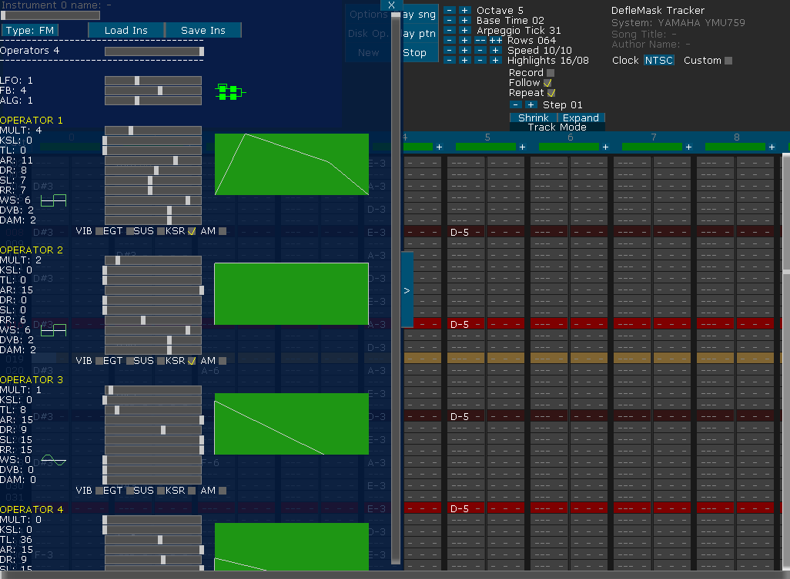
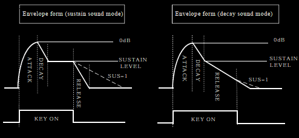

YMU759 INSTRUMENTS EDITOR MENU:

FM Instruments:
NOTE: FM Synthesis knowledge is needed to understand properly this section.
LFO: (0 = 1.9hz, 1 = 4.2hz, 2 = 6.1hz, 3 = 7.2hz)
Sets frequency for Vibrato and AM modulation. It can set within the range from 0 to 3.
FB: Sets Feedback modulation. It can set within the range from 0 to 7.
ALG: Sets the connection method of each operator.
MULT: Sets the magnification of frequency. It can set within the range from 0 to 15.
KSL: Sets the scaling of level (the amount of decay per octave). It simulates that the volume decreases as the interval becomes higher such as natural musical instruments. It can set within the range from 0 to 3.
TL: Sets the level of envelope. It can set within the range from 0 to 63.
AR: Sets the time from the starting of tone generation (-96 dB) to the moment maximum volume (0 dB). It can set within the range from 0 to 15. The bigger value makes faster attack. About the operator of Carrier side, setting of 0 is restricted.
DR: Sets the decay time from the moment maximum volume (0 dB) to Sustain Level (SL). It can set within the range from 0 to 15. The bigger value makes faster decay.
SL: In the case of decay sound, sets its Level changing from Decay Rate to Release rate. In the case of sustain sound, sets Sustain Level, that is sustaining volume level. It can set within the range from 0 to 15.
RR: Sets the time from key off to the mute status (-96 dB). It can set within the range from 0 to 15. When both of EGT and SUS are checked (enable), this setting is ignored.
WS: Designates waveform of each Operator that is used for FM operation. It can set within the range from 0 to 7. This setting is reflected to the display of WS picture.
DVB: Sets the depth of vibrato modulation. It can set within the range from 0 to 3. The bigger value makes vibrate more greatly.
DAM: Sets the depth of amplitude modulation. It can set within the range from 0 to 3. The bigger value makes vibrate more greatly.
VIB Check Box: Sets to apply a vibrato to Operator with the checkmark.
EGT Check Box: Sets as the sustain sound with the checkmark, and sets as the decay sound without the checkmark.
SUS Check Box: Sets as the Sustain-On with the checkmark. And it is changed to the release rate = 4 when the pronunciation length ends.
KSR Check Box: Sets Key scale of rate as effective with the checkmark.
AM Check Box: Sets to apply the amplitude (AM) modulation to corresponding operator with the checkmark.
